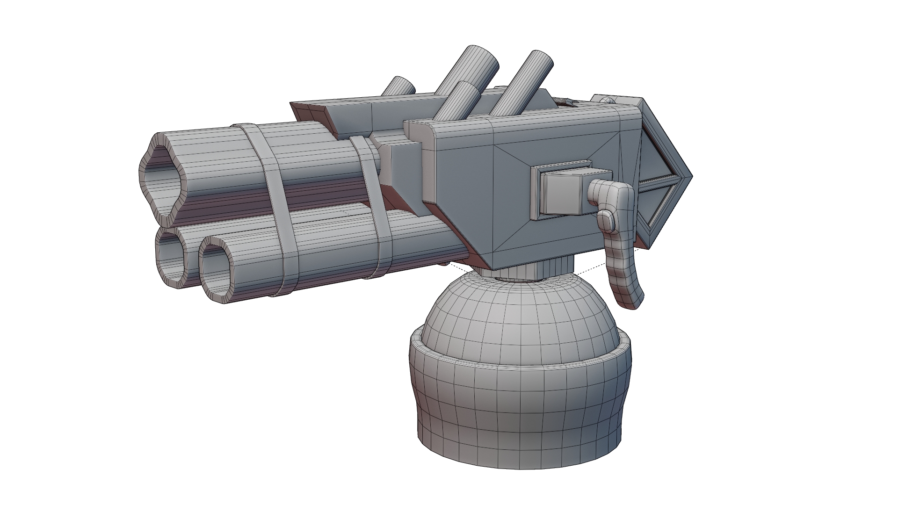
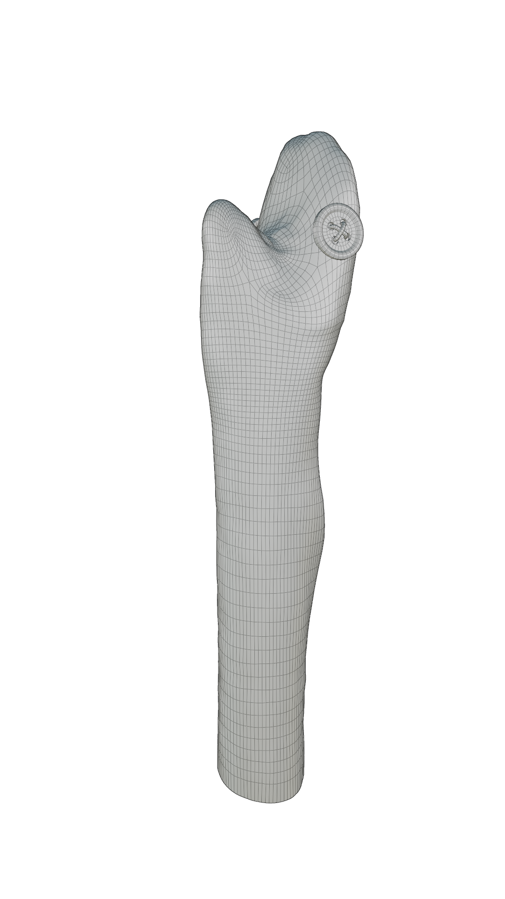

Modelling |
Intro
Welcome to Silly's 3D modelling section! Here, we'll discuss the main two types of modelling in blender, hard surface and organic modelling,
General Tips
When modelling, you are manipulating a mesh, which is a 3D representation of a shape using vertices, edges, and faces, or geometry. Using different operations we can make organic surfaces like characters, or hard surfaces like boxes and tables.
| Vertices | A singular point in space, part of a mesh. |
| Edges | A line connecting 2 vertices, part of a mesh. |
| Faces | A flat surface connecting 3 or more vertices, with edges between them. |
| Topology | The organization of geometry on your object. |
Hard Surface
Hard surface modelling is a method of modelling used to create "harder" surfaces, usually flatter, or with sharper edges. Examples of Hard surfaces are laptops, robots, and bottles. Hard surfaces appear more manufactured, unlike a human face, which would be organic modelling.

Organic
|  |
Organic Modelling is a method of modelling used to create softer surfaces, like skin or cloth, this is primarily used to create characters. Organic modelling has more spread-out topology to allow for proper deformation, allowing a character to bend properly. |